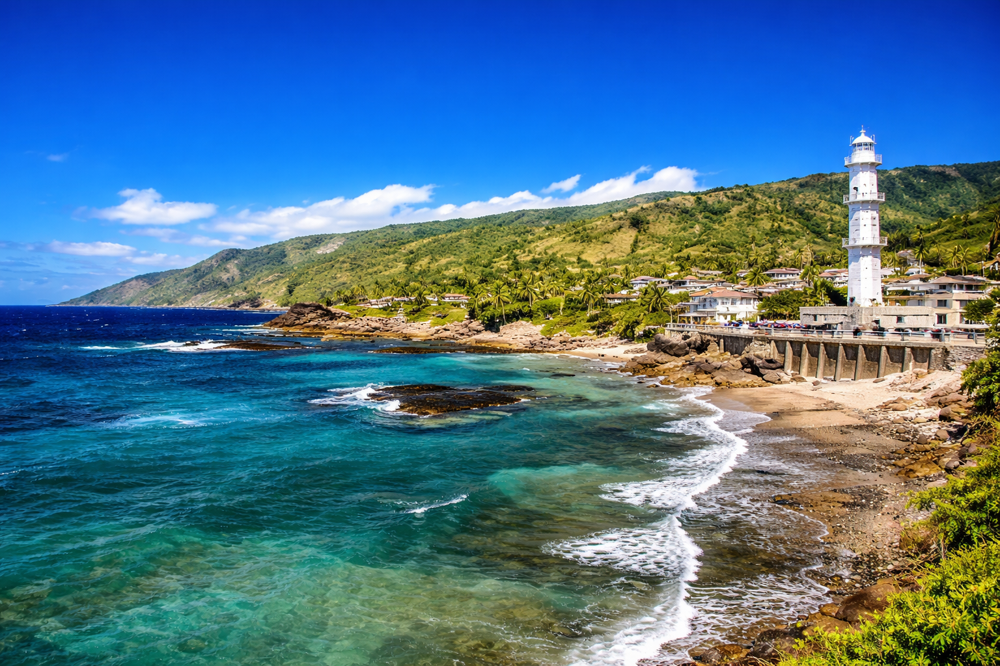

Grande Comore
45k
Mont Karthala
L'un des plus grands cratères actifs au monde, offrant des paysages lunaires

RetourParfums d'Ylang-Ylang et mystères des îles de la Lune
L'Union des Comores, nichée au cœur du canal du Mozambique, est un secret bien gardé de l'océan Indien. Surnommé l'archipel des parfums pour ses plantations d'Ylang-Ylang, de vanille et de girofle, le pays se compose de trois îles principales : la Grande Comore avec son volcan actif majestueux, le Karthala ; Mohéli, paradis de la biodiversité marine et sanctuaire des tortues vertes ; et Anjouan, l'île aux mille cascades et aux médinas historiques. Entre traditions séculaires, hospitalité généreuse et paysages d'une beauté sauvage, les Comores offrent une évasion authentique pour les voyageurs en quête de sérénité et de découvertes naturelles uniques.
Explorez les 15 merveilles de l'archipel comorien
L'un des plus grands cratères actifs au monde, offrant des paysages lunaires

Sanctuaire des baleines, dauphins et tortues vertes (Nioumachoua)

Ruelles labyrinthiques, portes sculptées et Mosquée du Vendredi

Ancien cratère volcanique rempli d'eau de mer turquoise, entouré de légendes

Une des plus belles plages d'Anjouan, idéale pour la détente et le snorkeling

Sable blanc et rochers de lave noire, spot de plongée exceptionnel

Lac de cratère au cœur de Mohéli, refuge pour de nombreuses espèces d'oiseaux

La citadelle et les ruelles médiévales de la "Perle de l'Océan Indien"

Ancienne capitale historique et ses falaises témoins de l'époque des sultans

Une baie abritée aux eaux calmes et cristallines, idéale pour le canoë

Paradis du snorkeling au milieu d'îlots volcaniques sauvages

Espace protégé dédié au célèbre "poisson fossile" vivant dans les eaux comoriennes
Ancienne cité des sultans et ses palais de corail magnifiquement sculptés
Une vaste étendue de sable blanc bordée de cocotiers sur la côte est
Emblème de la capitale, joyau de l'architecture religieuse swahilie
L'archipel des sultans et les parfums du canal du Mozambique.
La culture comorienne est un carrefour fascinant où se mêlent influences arabes, africaines, malgaches et françaises. Surnommées les "Îles de la Lune", les Comores conservent des traditions fortes, comme le "Grand Mariage" (Anda), pilier de la structure sociale. L'art de vivre y est paisible, rythmé par les senteurs de l'ylang-ylang et de la vanille qui embaument l'air. L'hospitalité comorienne est légendaire, ancrée dans des valeurs de respect et de partage. Chaque île possède son propre caractère, mais toutes partagent une foi profonde et une fierté pour leur patrimoine swahili millénaire.
L'Anda, une institution sociale majeure qui définit le statut et le respect d'un homme dans la cité.
Premier producteur mondial d'ylang-ylang, les Comores distillent l'âme des parfums les plus célèbres.
Un héritage millénaire visible dans l'architecture des médinas et la langue comorienne.
Le poisson "fossile" légendaire qui a fait des Comores un site de renommée scientifique mondiale.

L'artisanat précieux des Comores. Huiles essentielles, épices rares et vanneries fines.
 Pur
Pur
Essence pure distillée traditionnellement sur l'île d'Anjouan, réputée pour ses vertus apaisantes.
 Gourmet
Gourmet
Gousses de vanille charnues et parfumées, cultivées biologiquement dans les sous-bois comoriens.
 Épices
Épices
Girofle de haute qualité, séché au soleil, indispensable pour les ragoûts et thés épicés.
Bonnets traditionnels masculins, finement brodés de motifs géométriques par les artisans locaux.
Vannerie fine et colorée réalisée par les coopératives de femmes de l'île de Mohéli.
Maquette artisanale des voiliers traditionnels comoriens, sculptée en bois local.

Moroni, Luxe & Plage

Moroni, Vue sur Mer

Mohéli, Éco-paradis

Moroni, Charme & Calme

Anjouan, Nature Tropicale

Mohéli, Aventure Marine
La cuisine comorienne est un festin d'épices, de coco et de produits de la mer fraîchement pécés.
Le plat signature des Comores : langouste fraîche nappée d'une sauce crémeuse à la vanille.
Riz épicé parfumé aux clous de girofle et cardamome, servi avec de la viande de bœuf ou de chèvre.
Poisson du jour mijoté dans une sauce onctueuse au lait de coco frais et curcuma.
Feuilles de manioc pilées et cuites longuement dans le lait de coco, un plat traditionnel nourrissant.
Poulet mariné dans un mélange d'épices locales et cuit avec des légumes frais.
Accompagnement sucré-salé incontournable pour tous les repas de fête.
Pois d'angole cuisinés dans une sauce coco parfumée, une spécialité de Grande Comore.
Boisson fraîche et crémeuse réalisée à partir du fruit du corossolier.
Café noir infusé avec des graines de cardamome, servi traditionnellement.
Petites douceurs frites et généreusement trempées dans le miel local.
Glace artisanale rafraîchissante réalisée avec la pulpe de coco fraîche.
Calamars, crevettes et poissons grillés au feu de bois sur la plage.
Découvrez la joie et les traditions comoriennes à travers ses célébrations uniques.
Périodes festives (souvent en juillet-août) où les villages s'animent pour célébrer l'Anda.
Festivités nationales célébrant la souveraineté des Comores (6 Juillet).
Célébration de la naissance du Prophète avec chants religieux et repas communautaires.
Le meilleur moment pour visiter. Le climat est frais et sec, idéal pour l'ascension du Karthala et l'observation des baleines à Mohéli (juillet-octobre).
Saison plus humide avec des pluies tropicales. La végétation est luxuriante et c'est la période de ponte des tortues marines sur les plages de Mohéli.
Archipel très calme et accueillant. Vigilance normale dans les marchés. Respectez les coutumes religieuses et les tenues décentes.
Prévention antipaludique recommandée. Buvez de l'eau en bouteille. Protection solaire indispensable. Équipements de secours limités sur Mohéli.
Visa délivré à l'arrivée pour la plupart des nationalités (environ 30€). Prévoyez de l'espèce en Euros ou Dollars.
Franc Comorien (KMF). L'Euro est accepté dans les grands établissements (taux fixe : 1€ ≈ 492 KMF). Peu de distributeurs automatiques.
Expert Volcan & Trekking
Guide chevronné pour l'ascension du Karthala, Ibrahim connaît chaque sentier et légende du volcan.
Experte Biodiversité & Mohéli
Spécialiste du parc marin, Salma vous fera découvrir les secrets des tortues et des récifs de Nioumachoua.
Guide Culturel & Médinas
Passionné par l'histoire des sultans, Amir vous guidera dans les dédales des médinas de Moroni et Mutsamudu.